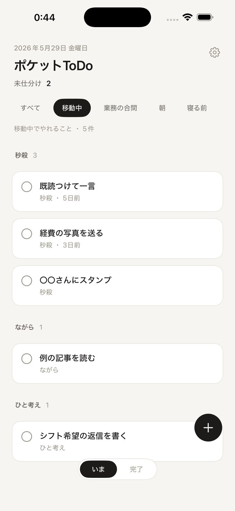
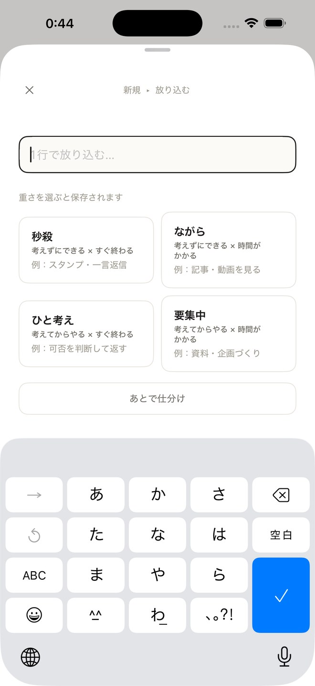
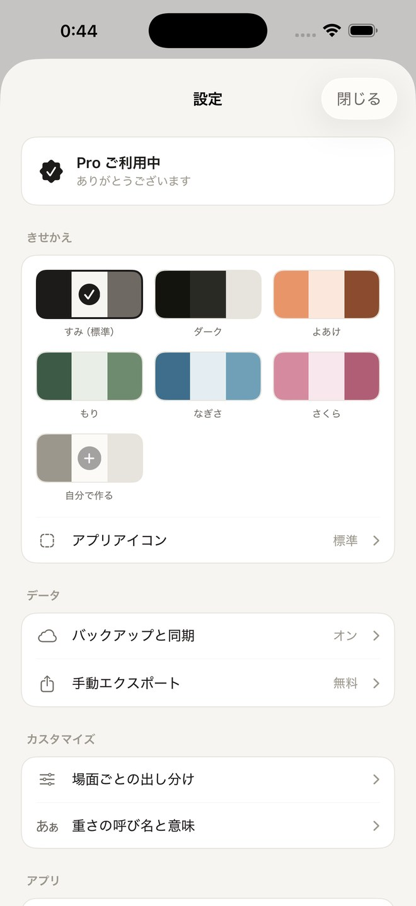
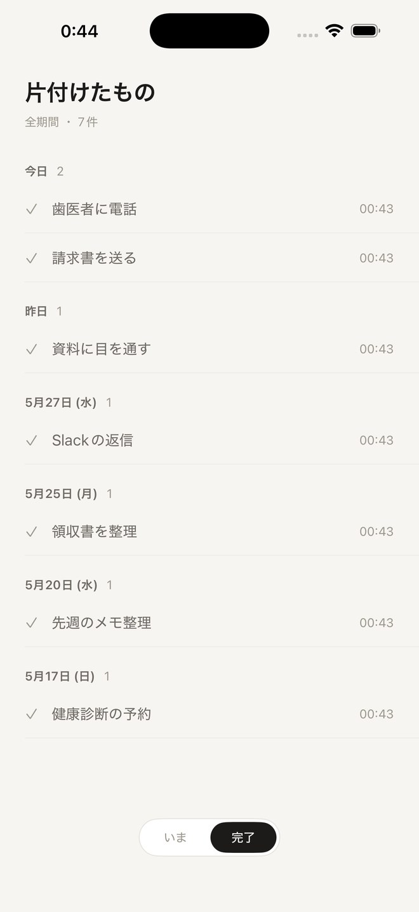

— 小タスク専用の ToDo アプリ —
ポケットToDo
移動中、寝る前。いま手をつけられる
軽さのタスクだけが、そっと出てくる。
登録ありがとうございます。
公開したら、いちばんにお知らせします。

｜
つかい方を見る
— 朝 6:40 ・ morning —
場面を選ぶと、
いまできる軽さだけ。
移動中、業務の合間、朝、寝る前。場面を選ぶと、その瞬間に手をつけられる重さのタスクだけが、軽い順に並びます。やることは、ただ上から片付けるだけ。
- 秒殺考えずにできる × すぐ終わる
- ながら考えずにできる × 時間がかかる
- ひと考え考えてからやる × すぐ終わる
- 要集中考えてからやる × 時間がかかる
— 移動中 8:15 ・ on the go —
一日のあいだ、
することは3つだけ。
- 放り込む＋ボタン、1行入力、重さを1タップ。3秒で終わる。
- 場面を選ぶ移動中。寝る前。場面ごとに、軽さで出し分ける。
- 片付ける軽い順に並ぶ。完了はスワイプ一発で。

— 業務の合間 13:00 ・ between tasks —
同じタスクでも、
場面が変われば出方が変わる。
移動中なら少し頭を使うものまで。寝る前なら、考えなくていい「秒殺」だけ。通知は鳴らさず、急かさない。その時間に手をつけられるものだけが、そっと並びます。
— 夕暮れ 17:30 ・ themes —
きせかえる
気分に合わせて、アプリの色も、ホーム画面のアイコンも、ぜんぶ着替える。6色のテーマと、自分で作るオリジナル配色。
— Pro

— 日が落ちて 19:20 ・ history —
片付けたものは、
ぜんぶ残っている。
7日より前に片付けたものも、Proなら全期間ふりかえれる。一日の終わりに、今日できたことが静かに積み上がっている。

— 宵 20:40 ・ plans —
無料で始めて、
必要になったら Pro。
無料
ずっと無料で。
- 放り込む・場面で出し分ける・片付ける
- 4場面の切り替え
- 直近7日の完了履歴
- 標準＋ダークテーマ
- CSV手動エクスポート
Pro
無料機能ぜんぶに、
- 全期間の完了履歴
- 4テーマ追加＋オリジナル配色3つ
- テーマ連動アイコン
- 重さの呼び名と意味のカスタマイズ
- iCloud同期（順次提供）
よくある質問
— questions —
データはどこに？
すべて端末内に。サーバーには送られません。アカウントもログインも不要です。
通知は来る？
来ません。急かさない設計のため、通知機能を意図的に持っていません。
機種変したら？
無料版はCSVで書き出して取り込み。Pro版はiCloud同期に順次対応します。
Proの解約は？
iPhoneの設定 → サブスクリプションから。解約してもデータは消えません。
寝る前に
— 寝る前 22:50 ・ before bed —
今日の光は、ここまで。
続きは、また明日のポケットに。
App Store、近日公開。
公開したら、いちばんにお知らせします。
登録ありがとうございます。
公開したら、いちばんにお知らせします。
メールの代わりに X（@bon_dev_）でも受け取れます
ひとりで作っています。